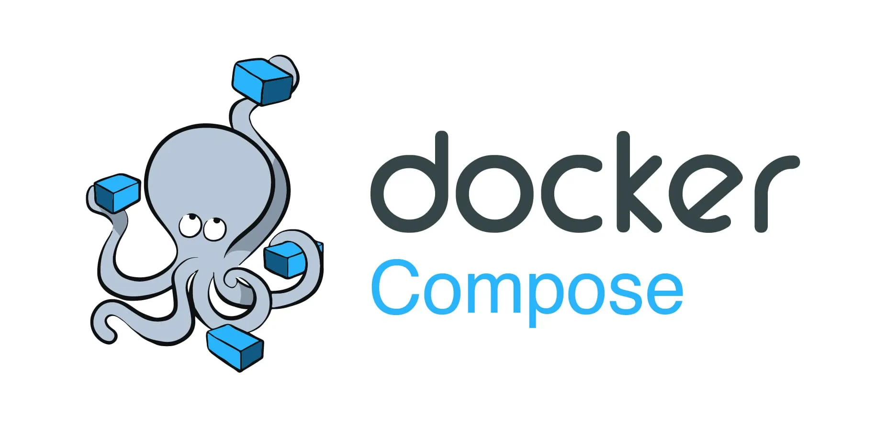

Docker Compose 개념 & 실습#

Docker Compose는 “여러 컨테이너를 하나의 애플리케이션으로 정의·실행”하기 위한 도구입니다.
여러 서비스를 하나의 설정 파일(docker-compose.yml)에 선언하고, 단일 명령으로 전체 스택을 관리할 수 있습니다.
Docker compose#
Compose의 역할#
여러 컨테이너(서비스)를 선언적(Declarative)으로 정의
네트워크, 볼륨, 의존성 등 설정을 코드로 관리
개발·테스트·CI 환경에서 동일한 스택을 쉽게 재현
주요 구성 요소#
services
애플리케이션을 구성하는 각 컨테이너(service)를 정의
networks (Option)
서비스 간 통신을 위한 네트워크 설정
volumes (Option)
컨테이너를 지워도 데이터가 사라지지 않도록 호스트의 디스크나 Docker 볼륨을 연결하여 파일을 보관
depends_on (Option)
서비스 간 “시작 순서” 의존성을 선언
장점#
일관성: 로컬 · CI · 프로덕션에서 동일한 설정
편의성:
up·down·logs만으로 전체 스택 관리버전 관리: YAML 파일로 Git에 커밋 가능
Docker compose example#
아래 예제는 웹 서버(Nginx) + Redis 스택입니다.
프로젝트 구조#
.
├── docker-compose.yaml
└── html/
└── index.html
docker-compose.yaml 작성#
version: "3.8" # Compose 파일 형식 버전
services:
web: # 웹 서버 서비스 정의
image: nginx:stable-alpine # 경량 Alpine 기반 Nginx 공식 이미지 사용
ports:
- "8080:80" # 호스트 8080 포트를 컨테이너 80 포트로 포워딩
volumes:
- ./html:/usr/share/nginx/html:ro
# 로컬의 html/ 디렉터리를 컨테이너의 웹 루트(/usr/share/nginx/html)에
# 읽기 전용(ro)으로 마운트
depends_on:
- redis # web 서비스가 시작되기 전에 redis 서비스가 먼저 기동되도록 설정
redis: # Redis 서비스 정의 (캐시/데이터 저장소)
image: redis:6-alpine # 경량 Alpine 기반 Redis 6 공식 이미지 사용
volumes:
- redis-data:/data # named volume 'redis-data'를 컨테이너의 /data에 마운트하여
# 데이터 영속성 확보
volumes:
redis-data: # named volume 정의
# - Redis 컨테이너가 삭제되어도 데이터가 유지됨
# - 호스트에서 위치는 Docker가 관리하며 필요 시 직접 마운트 가능
html/index.html 작성#
<!-- 원하는 문구를 입력하세요. -->
Hello World !
docker compose up#
역할
docker-compose.yml에 정의된 모든 서비스를 생성하고 시작합니다.
주요 옵션
-d,--detach: 백그라운드 모드로 실행--build: 시작 전에 이미지 재빌드--force-recreate: 기존 컨테이너를 강제로 재생성--remove-orphans: YAML 파일에 없는 이전에 생성된 컨테이너(orphans)를 삭제
docker compose down#
역할
up으로 생성한 컨테이너, 네트워크, 기본적으로 생성된 볼륨 등을 일괄 삭제합니다.
주요 옵션
--volumes: 정의된 named volumes까지 함께 삭제--remove-orphans: 현재 YAML에 없는 orphan 컨테이너도 삭제
docker compose ps#
역할
Compose 프로젝트 내 서비스별 컨테이너 상태를 조회합니다.
주요 옵션
-a,--all: 중지된 컨테이너까지 모두 표시--services: 서비스 이름만 나열
docker compose logs#
역할
전체 또는 특정 서비스의 로그를 조회 및 실시간 스트리밍합니다.
주요 옵션
-f,--follow: 실시간 로그 스트리밍--tail <N>: 최근 N줄만 출력--timestamps: 로그에 타임스탬프 포함
실습#
# 백그라운드 실행
docker compose up -d
# 실행 중인 컨테이너 조회
docker compose ps
# web 서비스 로그
docker compose logs web
# 전체 서비스 실시간 로그
docker compose logs -f
# 컨테이너·네트워크·볼륨(옵션) 일괄 제거
docker compose down --volumes
Tip:
docker compose build로 서비스 이미지를 재빌드할 수 있습니다.
docker compose up --build로 실행 시 자동 빌드 후 재시작합니다.
이제 Docker에 대한 기본 명령어들을 모두 익혔습니다.
다음 챕터에서는 Docker를 이용해서 Ollama 내 로컬에 띄워봅시다.